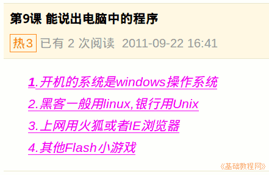

2011-2012 第一学期七年级电脑操作基础教学课程设计
作者：TeliuTe 来源：基础教程网
九、能说出电脑中的程序 返回目录 下一课
学习目标：接上一节学习电脑中的程序；
注意事项：记住上网用的程序；
1、说出电脑中的程序
1）我们所用的系统是Windows；
2）其他的系统还有 Linux和Unix；
3）我们上网用的是火狐，还可以用IE；
4）空间中的小游戏是Flash动画；

板书设计：第9课 能说出电脑中的程序
1.开机的系统是windows操作系统
2.黑客一般用linux,银行用Unix
3.上网用火狐或者IE浏览器
4.其他Flash小游戏
课后记 2011-9-22 18:07：
内容还是少了些，四行一下就讲完了
往日志里输也一会就写好了
--
如果加到五条的话，
有些可能要慢些
--
得找个好的办法，让快的有事做
多学点，顾不过来还
--
得讲一下新标签的用法，
这样可以同时做两件事情
--
如果玩的太多了，后面就会腻味
得找个持久的
--
后面还两个班，慢慢来
大多数的指法还是可以的
----------------------后两节---------------------------------
挨着学生过，把动作慢的挑出来
得想法让自己主动去学，而不是光想着玩来逃避
--
把四个单词读一遍，以后听到也有个印象
把上一节的硬件日志调出来点评一下
要求字写大些，这样老师检查方便也美观
本节学习了的基础知识，如果你成功地完成了练习，请继续学习下一课内容；
返回目录 下一课
本教程由86团学校TeliuTe制作|著作权所有
基础教程网：http://teliute.org/
美丽的校园……
转载和引用本站内容，请保留版权信息和本站链接。